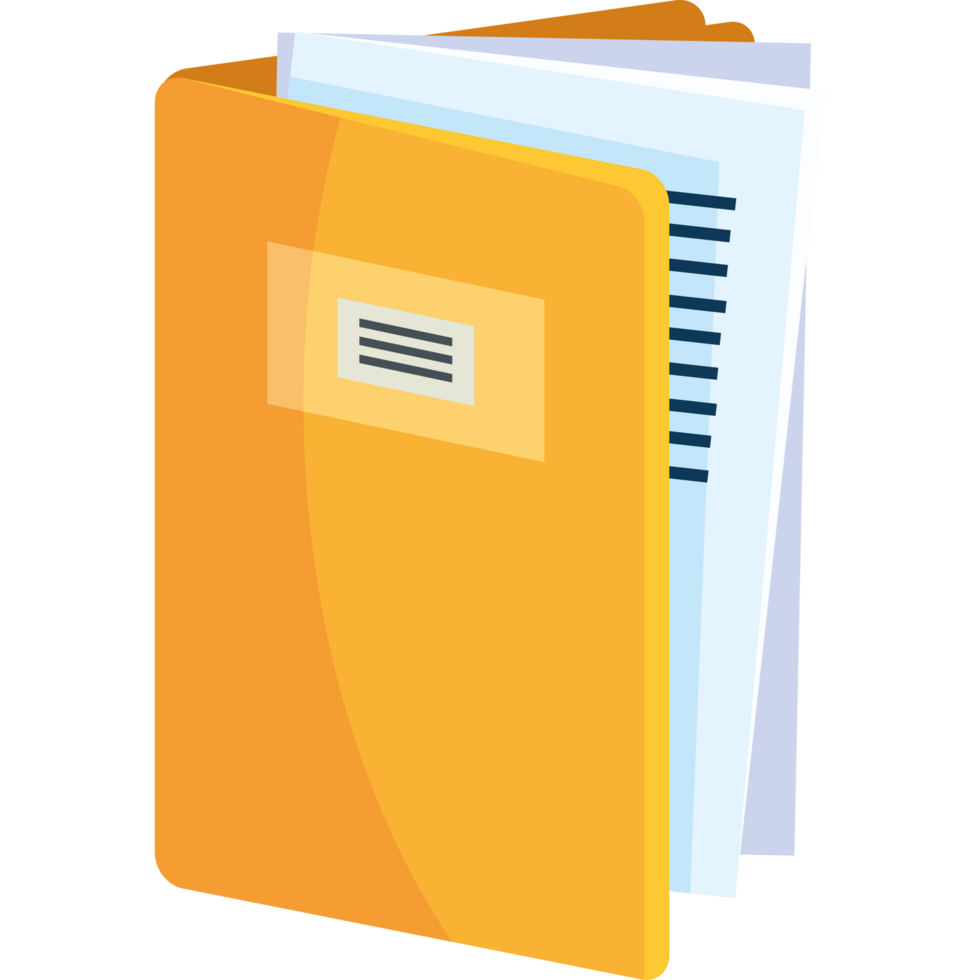
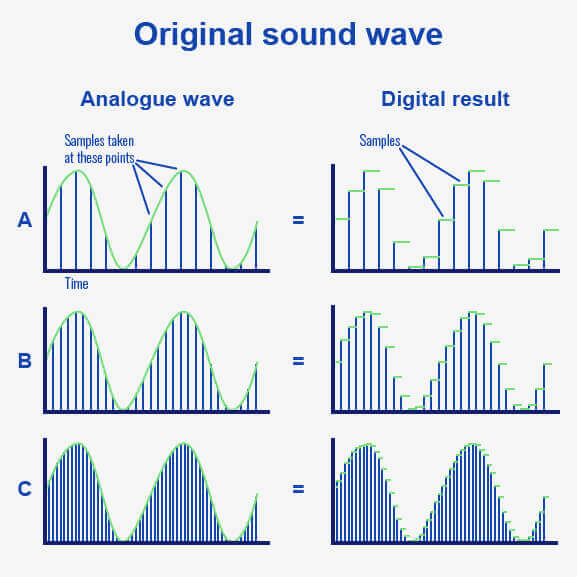

Welkom bij de pagina over bitmap en vectorafbeeldingen
Wat zijn bitmapafbeeldingen?
Een bitmapafbeelding is eendigitale afbeelding die uit pixels bestaat. Dit type afbeelding is vooral geschikt voor beelden die veel kleurinformatie nodig hebben. Een belangrijk voordeel van bitmapafbeeldingen is dat ze gemakkelijk te bewerken zijn, en ze bieden een rijke kleurweergave en detailniveau. Aan de andere kant hebben bitmapafbeeldingen ook nadelen: ze nemen relatief veel opslagruimte in beslag en kunnen onscherp worden wanneer je inzoomt, omdat de individuele pixels dan zichtbaar worden.
Daarnaast zijn bitmapafbeeldingen in verschillende bestandsformaten beschikbaar, zoals JPEG, PNG en BMP, elk met zijn eigen specifieke kenmerken en compressie manieren. JPEG's zijn bijvoorbeeld populair voor foto's vanwege de efficiënte compressie, terwijl PNG's transparantie ondersteunen en beter zijn voor afbeeldingen met tekst of scherpe randen. De keuze van het juiste formaat heeft vaak invloed op de kwaliteit en het gebruik van de afbeelding.
Voorbeeld van een PNG (het plaatje is deels transparant):
Wat zijn vectorafbeeldingen?
Een vectorafbeelding is een digitale afbeelding die is opgebouwd uit lijnen en vormen. Dit type afbeelding is goed voor logo's en iconen die vaak vergroot of verkleint moeten worden, omdat ze onbeperkt kunnen worden geschaald zonder dat er kwaliteitsverlies is in het plaatje.
Een ander voordeel is dat ze meestal een kleinere bestandsgrootte hebben dan bitmapafbeeldingen. Maar, vectorafbeeldingen zijn minder geschikt voor ingewikkelde beelden met veel kleurtinten en kunnen moeilijker te bewerken zijn. Toch zijn ze perfect voor grafisch ontwerp en branding, waar helderheid en schaalbaarheid belangrijk zijn.
Voorbeeld van een vectorafbeelding (links is vector, rechts is bitmap):

Voor muziek wordt meestal een samplefrequentie van 44,1 kHz gebruikt. Dit betekent dat er 44.100 geluidssamples per seconde worden genomen. Deze frequentie is de standaard voor cd-kwaliteit audio en kan alle geluiden tot ongeveer 20 kHz vastleggen.
De samplefrequentie bepaalt hoe vaak een geluidssignaal per seconde wordt gemeten en heeft invloed op de geluidskwaliteit en de grootte van het bestand. Hogere samplefrequenties, zoals 48 kHz of 96 kHz, geven meer dingen zoals details en worden vaak in professionele studio's gebruikt, maar ze zorgen ook voor grotere bestanden.
Afhankelijk van de gekozen samplefrequentie kunnen audiobestanden verschillen in grote, vooral bij professionele studios is dit extreem veel te zien, daar kunnen de bestanden zelfs wel in de terabytes aan data oplopen. Het is belangrijk om een goede manier te vinden om dit te verbeteren en zo min mogelijk bestandgrote te hebben met audio kwaliteit voor een goede opslag en gebruik van audio.
